what the delay does to five unrelated control laws
The findings
Four figures carry the result. Everything below them is supporting detail, folded away.
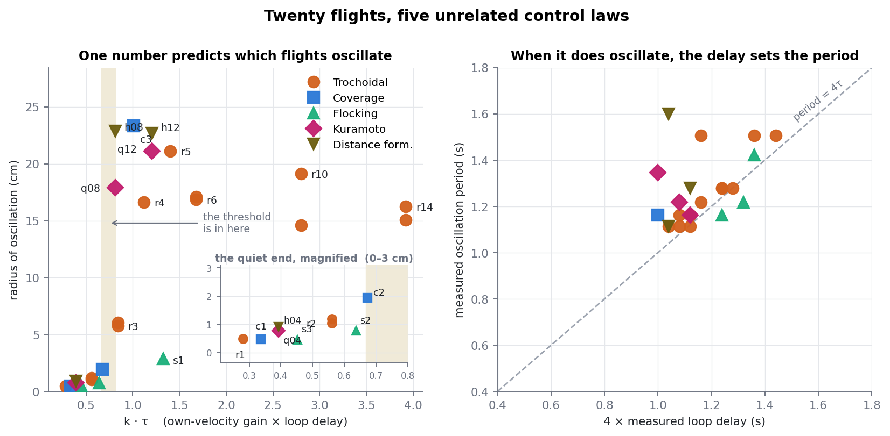
The result, in one figureTwenty flights, five unrelated control laws, plotted against a single number: the gain each law applies to a drone's own velocity, times the 0.28 s it takes that velocity to become thrust. Below k·τ ≈ 0.7 nothing oscillates. Above ≈ 1.0 everything does — and when it does, the period is 4τ regardless of which paper the law came from. Kuramoto and distance formation were added on 6 Oct as a prediction test: both were stepped straight onto the ladder at 1.4 / 2.9 / 4.3, and both broke exactly where the other three said they would.
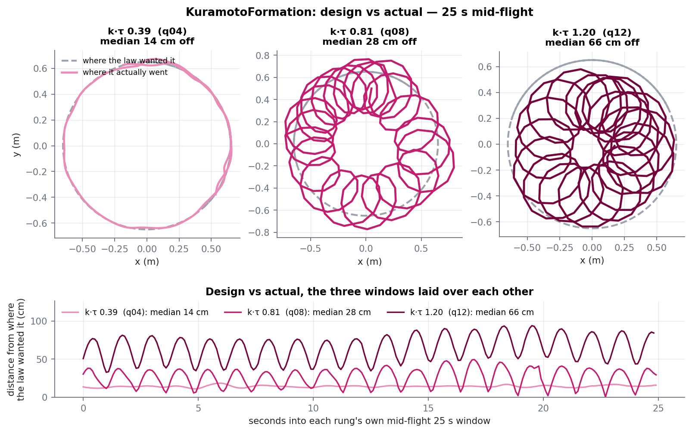
Kuramoto: the same threshold, on a fourth paper's lawFour oscillators holding a 0.65 m ring. Only the own-velocity gain changes between the three panels — the ring the law asks for is identical. At k·τ 0.39 the drone flies the circle 14 cm off. At 0.81 it flies a rosette 28 cm off, at 1.20 a denser one 66 cm off, ringing at 1.2 s against 4τ = 1.1 s. The ladder was designed before the flight from the other three algorithms' numbers; nothing here was tuned afterwards.
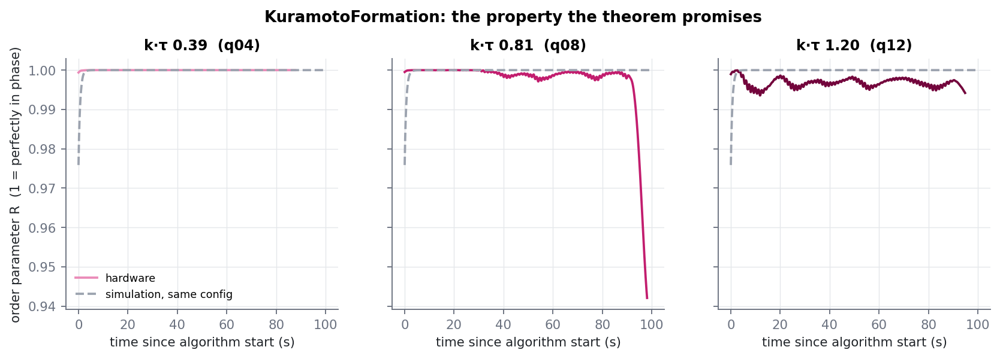
And the paper's own metric reports none of itThe order parameter R is what a Kuramoto paper plots: 1.0 means the oscillators are perfectly in phase. Across a ladder that takes the aircraft from 0.8 cm of oscillation to 21.1 cm, 29° of bank and 80% of its acceleration clipped, R reads 1.0000, 0.9909 and 0.9962 — within 1% of simulation on every rung. Phase synchronisation survives intact while the flight does not. Distance formation is the counter-example that makes the point sharper: its edge error does report the failure — 0.006 m at k·τ 0.39 against 0.107 m at 0.81, and 27× its own simulation at that rung. Whether the sim-to-hardware gap is visible at all depends on which metric the paper chose.
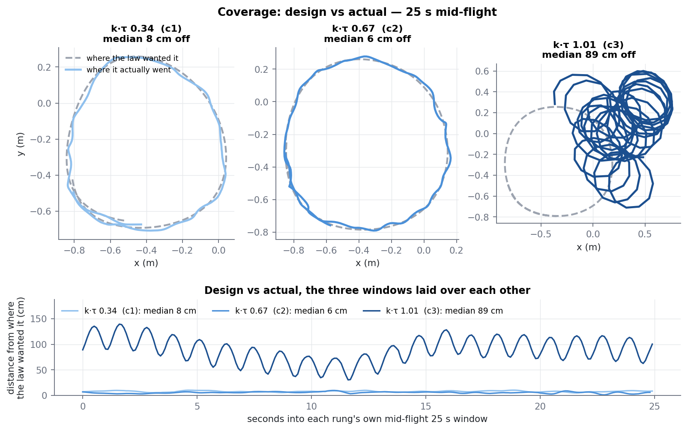
Coverage: the quiet algorithm, made to ring on purposeThe same law at three speeds. At k·τ 0.34 and 0.67 the drone flies where the law wanted it — 8 and 6 cm away. At k·τ 1.01 it misses by 89 cm and covers the room in loops. Coverage was the robust control condition; this is the first time the project produced a failure rather than found one.
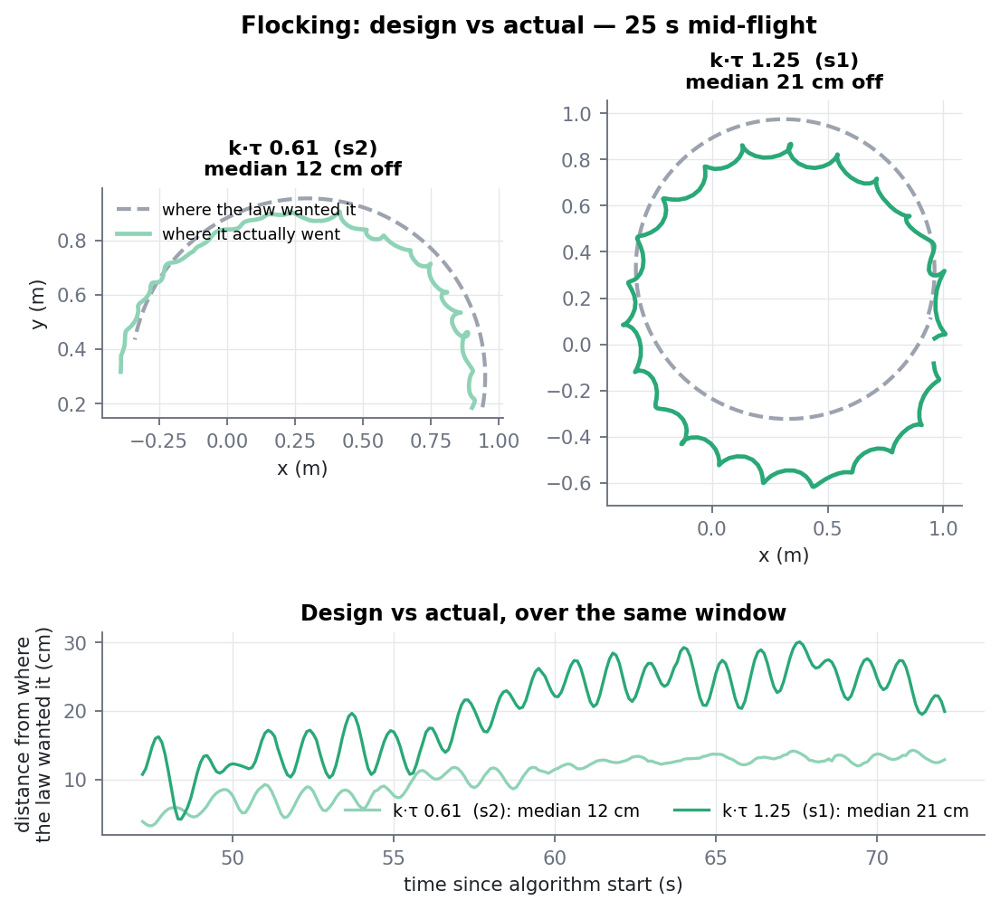
Flocking: the same fix, on a different paper's lawSlowing the clock — position gains ×c², velocity gains ×c, same lattice, same path — walks the drone from 21 cm off the designed position to 12 cm at half speed and 6 cm at a third, and the settled lattice error from +41% against simulation to −1% to −0.1%. The gap to simulation did not shrink; it closed.
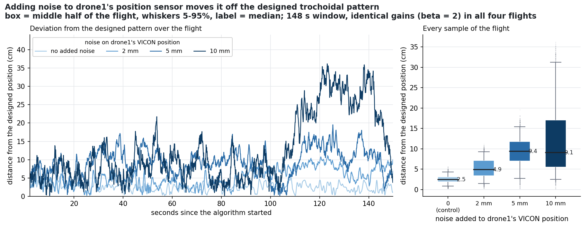
The first lever that widens the gap to simulationThree earlier sweeps moved a parameter inside the control law and left the hardware-vs-simulation gap untouched, which in hindsight they had to: simulation runs the same parameter. Noise on the position sensor is a property of the aircraft instead, and it walks the drone from 2.7 cm off the designed pattern to 15.4 cm — 72% of the pattern's own radius — with every gain held fixed.
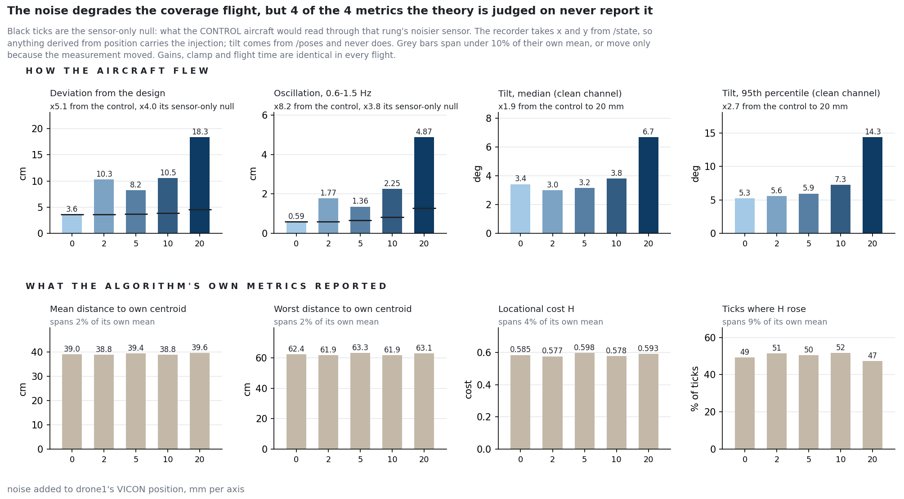
The gap the published metrics do not reportThe same noise lever on coverage, with a 20 mm rung added because coverage is the quiet algorithm. It moves the flight hard — 3.6 to 18.3 cm off the designed position, oscillation ×8, median tilt ×2 on a channel the injection cannot reach — while the locational cost H and both centroid distances, the numbers a coverage paper actually plots, stay inside 4% of their own mean. Flocking splits the same way, and harder: all four of its theorem metrics stay put, and the one that appears to move is reading its own noisy velocity estimate. Which metric you publish decides whether the sim-to-hardware gap exists.
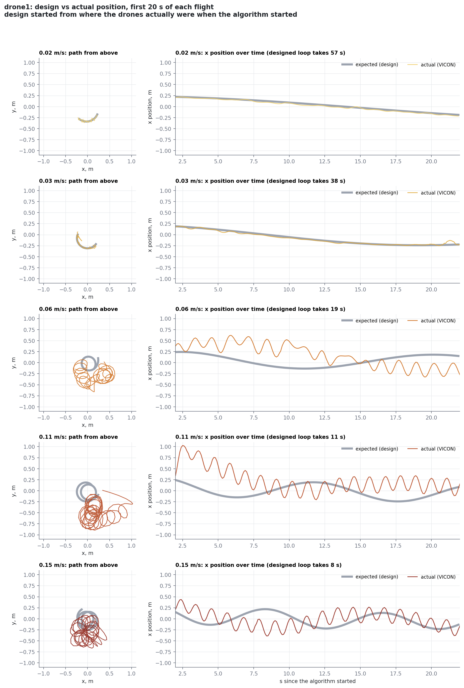
Trochoidal: where the ladder startedThe original finding, kept here for comparison: the designed pattern against what flew, across β = 1 to 14. The design is simulated from the real start positions, because the drones sat on each other's marks on 15 Sep.
Hotspot speed
Coverage at three hotspot speeds, gains untouched, all flown 22 Sep. k·τ is 0.67 in every run, so anything that changes here is the task getting harder, not the delay margin moving.
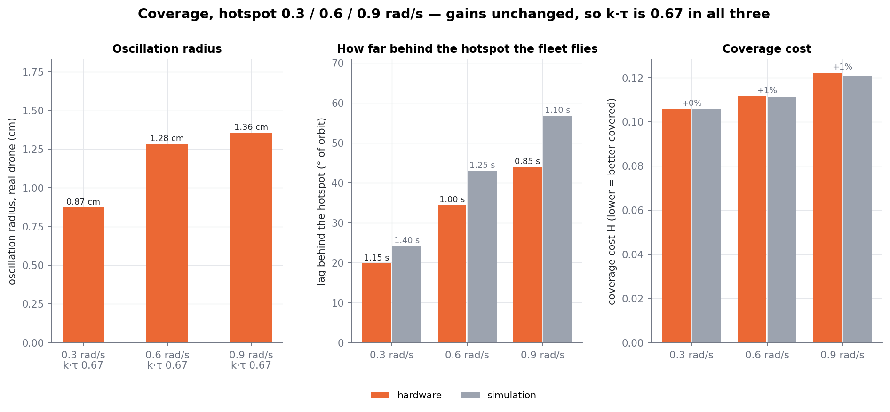
Hotspot speed: oscillation, lag and costThree hotspot speeds, same gains, so k·τ is 0.67 in all three. The oscillation barely moves. The fleet flies about a second behind the hotspot at every speed, which is a bigger and bigger part of an orbit as the hotspot speeds up. The coverage cost rises with it, and hardware stays within 1% of simulation of the same file.
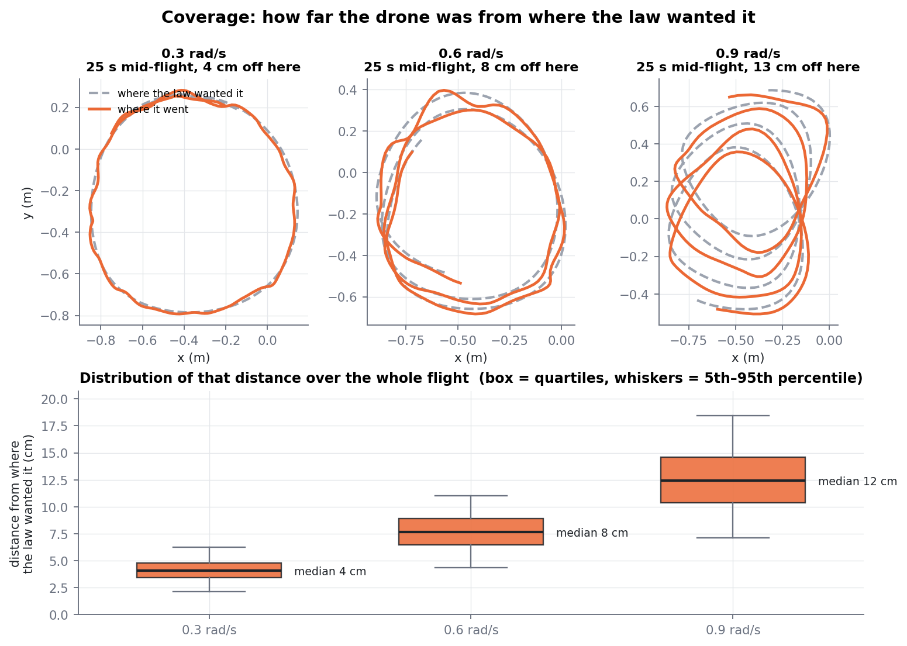
Hotspot speed: distance from the designed positionTop: where the law wanted the real drone against where it went, 25 s mid-flight. Bottom: the same distance at every row of the whole flight, so a run that is usually fine and occasionally bad cannot hide behind its median. 4 cm at 0.3 rad/s, 13 cm at 0.9, with the 95th percentile reaching 46 cm.
Graph topology
Flocking at three neighbour-graph topologies — 4, 5 and 6 edges — flown 23 Sep with gain_c2_alpha set per rung so k·τ stays at 0.53. The graph changes; the delay margin does not.
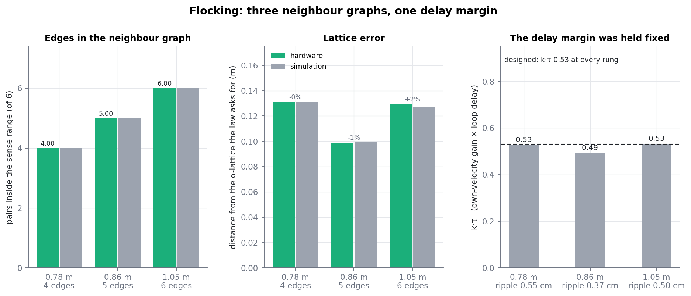
Three graphs, one delay marginLeft: the ladder set the graph it was designed to set — 4.17, 5.14 and 5.99 of the six possible pairs inside the sense range, against 4, 5 and 6 in simulation (the fractions are pairs sitting within a centimetre of the range, flickering in and out). Middle: the lattice is TIGHTEST at five edges, not six — the non-monotone result predicted from simulation, now confirmed on hardware. Right: k·τ held at 0.49–0.53 throughout, which is what makes the middle panel readable as a topology effect rather than a delay effect.
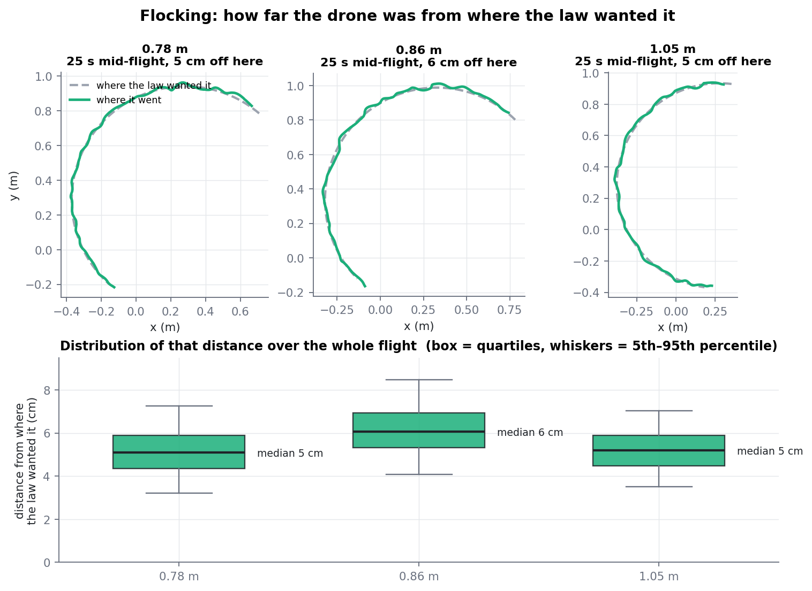
Graph topology: distance from the designed positionAll three rungs track their own design to 5–6 cm median with a 7–9 cm 95th percentile. Changing the neighbour graph does not change how faithfully the real drone follows the law — it changes what the law converges to.
Sensor noise
Trochoidal at β = 2 with artificial Gaussian noise added to drone1's VICON position — 0 (control), 2, 5 and 10 mm per axis, all four flown 23 Sep. Every other lever so far has been a parameter inside the control law, which cannot widen the gap to simulation by construction. This one is a property of the hardware, and it does.
Sensor noise: distance from the designed positionLeft: how far drone1 was from where the noiseless design put it, at every moment of four otherwise identical flights. Right: the same distance as a distribution, so a run that is usually fine and occasionally bad cannot hide behind its median. RMS deviation runs 2.7 / 5.8 / 10.0 / 15.4 cm, and the 95th percentile 4.3 / 9.3 / 15.4 / 31.2 cm. The control is flat across the flight; the noisy rungs drift further out the longer they fly.
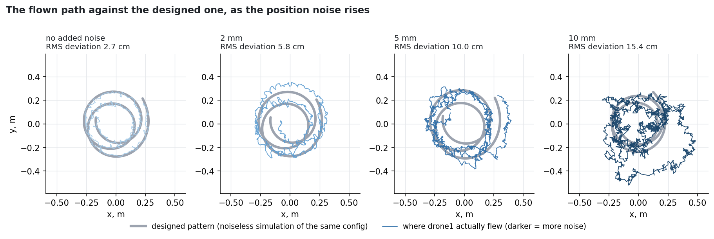
Sensor noise: the flown path against the designed oneThe same four flights seen from above, grey the noiseless simulation of the same config. The pattern is recognisable at 2 mm, ragged at 5 mm and barely a trochoid at 10 mm, where the RMS deviation is 72% of the 23 cm pattern radius.
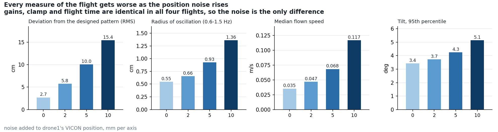
Sensor noise: four measures of the same flightsPattern deviation, oscillation radius, flown speed and tilt all rise monotonically with the noise. The drone chases its own measurement error: the least-squares velocity fit multiplies position noise by 11, the brake multiplies that by β, so 10 mm of position noise reaches the command as roughly 22 times its size. CAVEAT, added 30 Sep: the recorder takes x and y from /state, i.e. the noisy reading, so the speed panel is mostly the differentiator amplifying the injection (0.117 m/s measured against a 0.091 m/s sensor-only null) and the oscillation panel is partly so (1.37 against 0.78 cm). The deviation panel is inflated by under 1% and the tilt panel comes from /poses, so the headline of this ladder is unaffected. The two later ladders carry the null explicitly.
Sensor noise: flocking
The same lever on Olfati-Saber flocking at k·τ = 0.64 — 0, 2, 5 and 10 mm per axis on drone1, flown 29 Sep. The flight degrades, but only one of the theorem's four promises reports it.
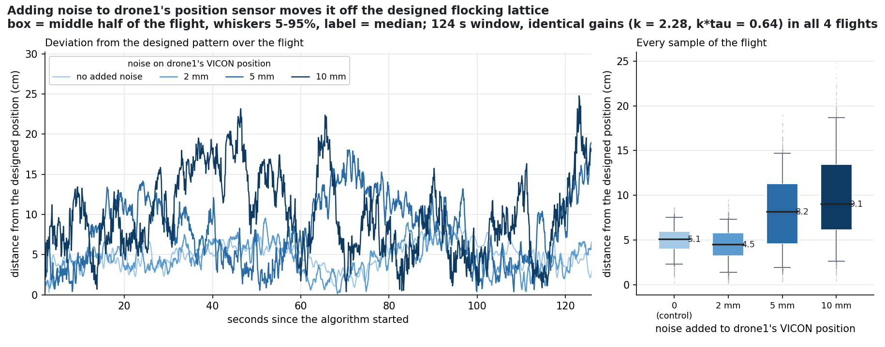
Sensor noise, flocking: distance from the designed positiondrone1 against where the noiseless simulation of the same config put it, over a 124 s window. RMS deviation 5.5 / 4.8 / 9.1 / 11.1 cm. The 0 and 2 mm rungs are indistinguishable — 2 mm of noise is below what a single flight can resolve here — but 5 and 10 mm are clearly separated from the control. The window stops at 138 s to exclude a 0.9 s tracking loss in the 2 mm record at t = 144 s.
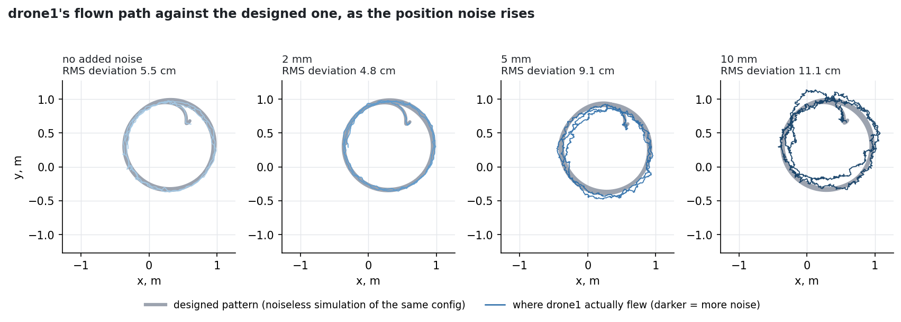
Sensor noise, flocking: the flown path against the designed oneThe gamma term walks the flock around a 0.6 m circle, so the designed path is a clean orbit. It stays clean at 2 mm, frays at 5 mm and is visibly ragged at 10 mm.
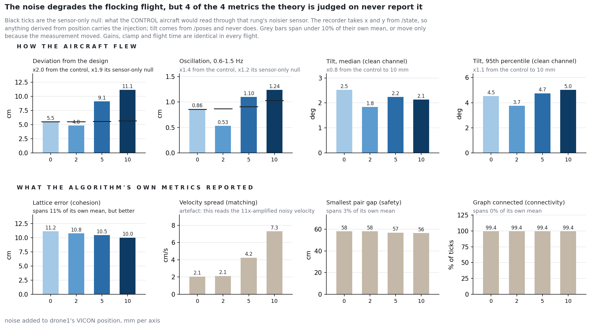
Sensor noise, flocking: the flight against the theorem's own promisesThe weak half of the pair, and the figure says so. Deviation is the only measure that clears its sensor-only null (×2.0 from the control, ×1.9 its null); the oscillation sits at the null and the tilt, on the clean /poses channel, does not move. Bottom row: all four of Olfati-Saber's promises stay put. Velocity matching appears to move ×3.5, but it reads the least-squares velocity, where the fit has already multiplied the position noise by 11 — at 10 mm that alone is 0.11 m/s, more than the whole rise. It is an artefact, greyed here.
Sensor noise: coverage
The same lever on Cortés coverage at k·τ = 0.67, with a fifth rung at 20 mm because coverage is the quiet algorithm, flown 29 Sep. Deviation, oscillation and acceleration all climb; the coverage cost and the centroid distances do not move at all.
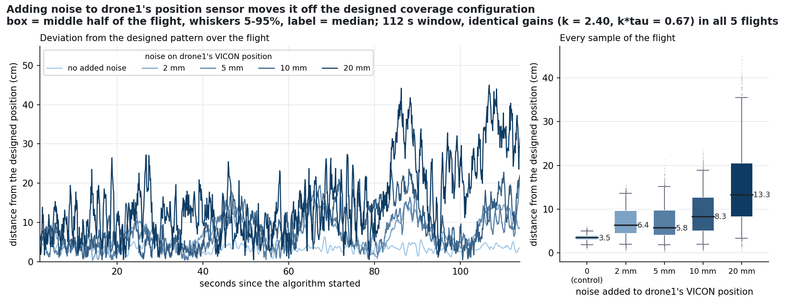
Sensor noise, coverage: distance from the designed positionFive rungs over a 112 s window. RMS deviation 3.6 / 10.3 / 8.2 / 10.5 / 18.3 cm. The control is flat and low for the whole flight; 20 mm is never quiet. With one flight per rung the 2-10 mm ordering is inside the run-to-run spread, but the control and the 20 mm rung are not close to each other.
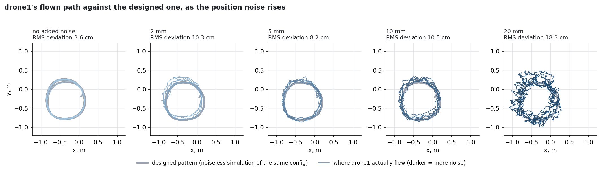
Sensor noise, coverage: the flown path against the designed onedrone1 chasing the orbiting hotspot. The 0 mm trace sits on the grey design; by 20 mm the drone is scribbling a band roughly 20 cm wide around it.Sensor noise, coverage: the flight against the algorithm's own metricsThe cleanest version of the result, on three independent measures. Deviation ×5.1 from the control and ×4.0 its sensor-only null; oscillation ×8.2 and ×3.8 its null; median tilt ×2.0 and p95 ×2.7 on the /poses channel, which the injection never touches. Bottom row: the mean and worst distance to each agent's own Voronoi centroid, the locational cost H, and how often H rose instead of falling. All four span 2-9% of their own mean across the whole ladder, with no trend — and since they are computed from the noisy positions, the noise can only have biased them upwards, so their flatness is an understatement. The coverage objective cannot see a lever that doubles the tilt and puts the drone 18 cm off its designed position.
Fleet size
One real drone against two, at 0 and 10 mm of noise — the only sweep in the corpus that changes how much of the fleet is a real aircraft rather than a parameter. One-real row 23 Sep, two-real row reflown 6 Oct with the marks verified, beta = 2 and identical gains throughout. One flight per cell.
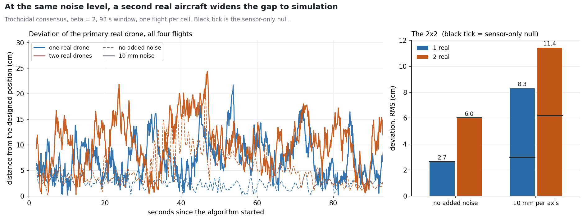
Fleet size: deviation with one real drone and with twoAll four flights over a common 125 s window, and the 2x2 as paired bars. With no added noise a second aircraft costs little — 2.7 to 3.6 cm. At 10 mm it costs a great deal: 12.6 to 36.4 cm, and the sensor-only null under that bar is only 3.8 cm, so what the second aircraft adds is nine times the measurement. Black ticks are that null, because the recorder takes x and y from /state — the noisy reading.
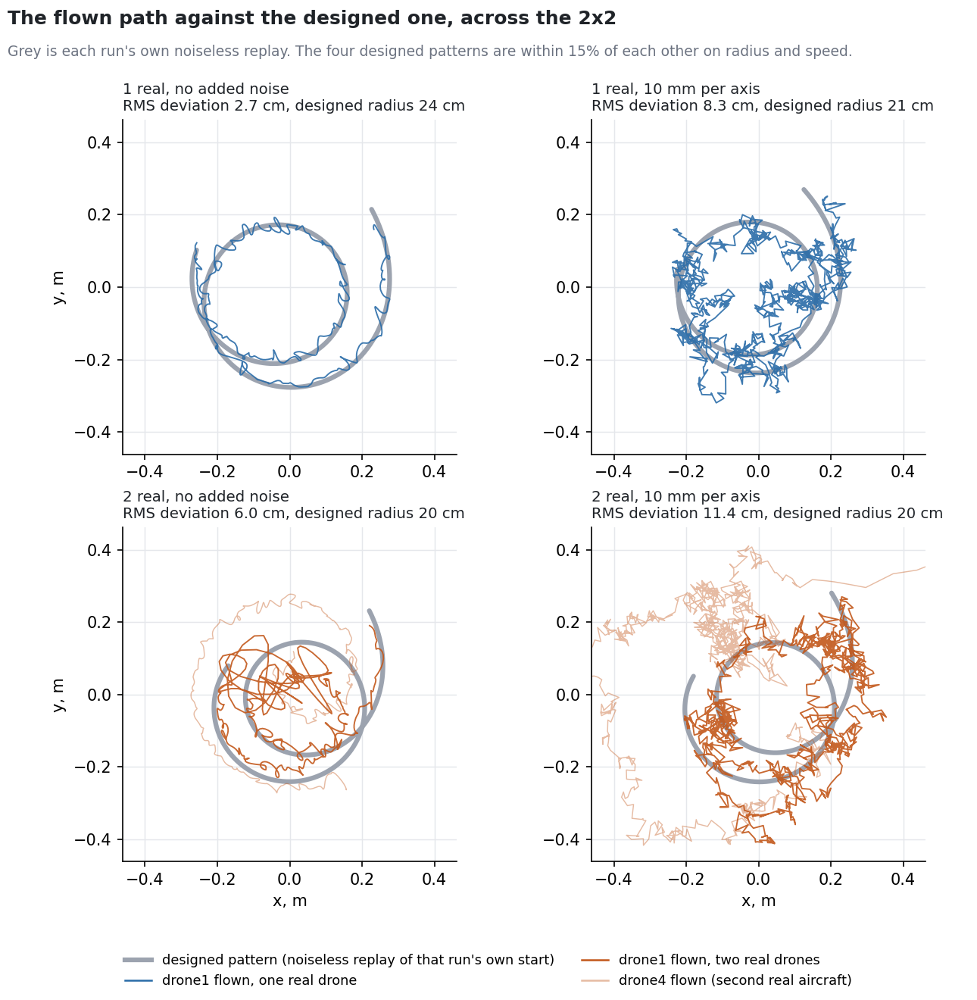
Fleet size: the flown path against the designed oneThe 2x2 as paths, grey being each run's own noiseless replay. The faint orange trace in the bottom row is drone4, the second real aircraft. The two-real row was reflown on 6 Oct with the marks checked at engage (drone1 within 2 cm of its own), so for the first time the pair holds its designed 0.40 m separation instead of closing to nothing.
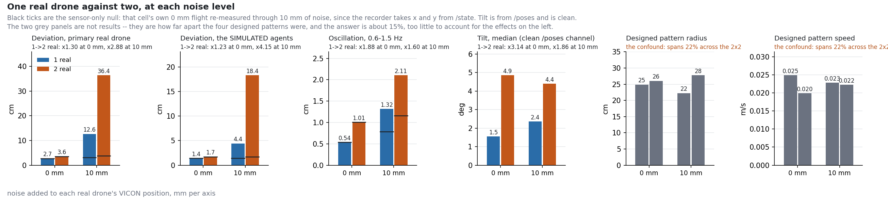
Fleet size: every measure, with the confound beside itThe cleanest signal is the second panel. Deviation of the SIMULATED agents — which never carry injected noise and never touch the air — rises x1.2 at 0 mm and x4.2 at 10 mm when a second real aircraft joins. They can only have moved because the noise reached them through the consensus graph, which is the mechanism this sweep was built to look for. Caveats on the right: the one-real row is 23 Sep with drone1 on the wrong mark, the two-real row is 6 Oct with the marks verified, and the two-real flights are vertically separated (1.41 m and 0.75 m) because otherwise the pair collides. Fleet size acts separately from noise rather than amplifying it. Oscillation is unreliable here (the 2-real 0 mm flight contains a disturbance) and median tilt does not move. The two grey panels are the confound: the four designed patterns span 17%, too little to explain the effects.
Sense range
A NULL RESULT, kept for the reason it failed. Both rungs turned out to be the same neighbour graph, so there was nothing there to measure. The replacement ladder steps across graph topologies at fixed k·τ (configs …_s2_g4/g5/g6.yaml).
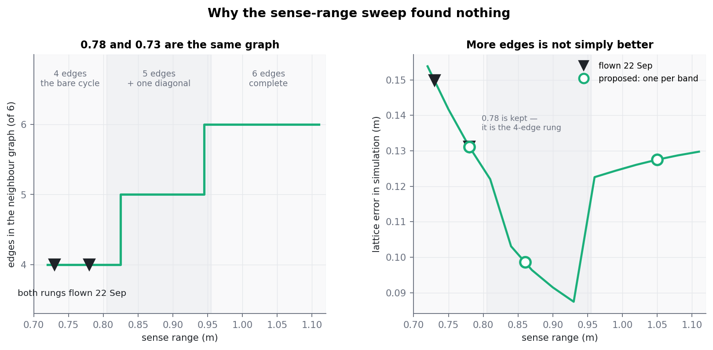
Why this sweep found nothingA 4-drone diamond has six possible edges — four sides and two diagonals — and which of them exist depends on where the sense range falls between the settled side (~0.57 m) and the settled diagonal (~0.81 m). Both flown rungs land in the 4-edge band, so they are the same graph squeezed slightly, and the algorithm refuses a sense range below the 0.70 m spacing, so that band is only 0.70–0.80 m wide. The lever should step ACROSS the bands instead, and the effect is not monotone: the 5-edge graph holds the tightest lattice.
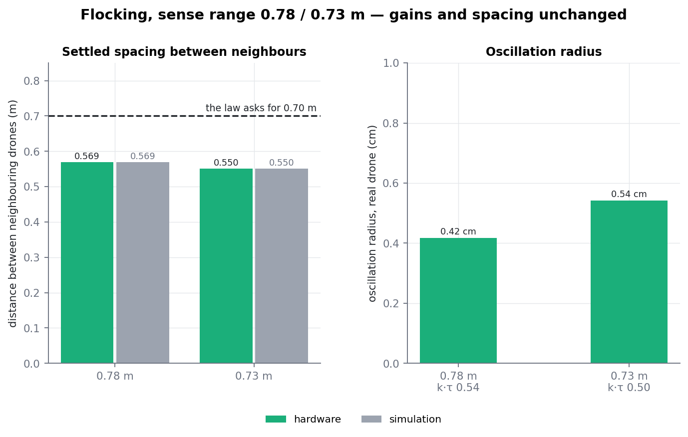
Sense range: spacing and oscillationLeft: the distance the flock actually settled on between neighbouring drones, against the 0.70 m the law was told to hold. It settles short of the target and shorter still as the sense range shrinks — and simulation does the same thing, so this is the law, not the hardware. Right: the ripple on the real drone.
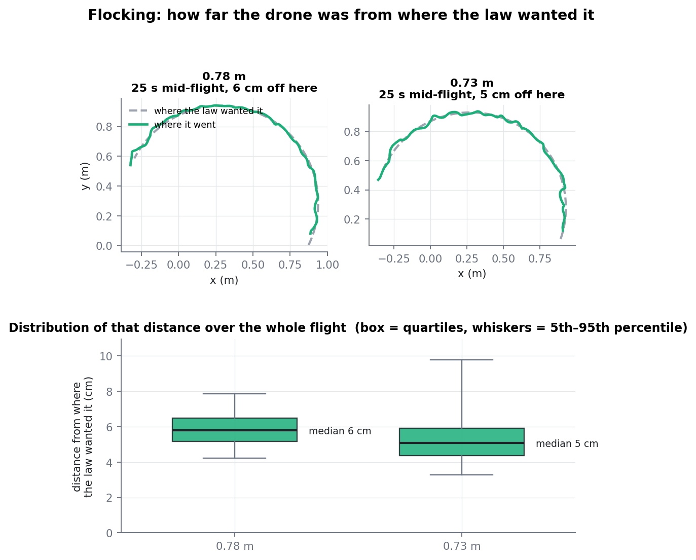
Sense range: distance from the designed positionWhere the law wanted the real drone against where it went, and the distribution of that distance over the whole flight. The drone tracks its own design more closely at the shorter sense range, 6 cm against 5 cm median, with a tighter spread.
Trochoidal
Eight rungs of the same pattern, β from 1 to 14. The rung where the oscillation starts is the whole result.
rung
k
k·τ
τ measured
wobble, real
wobble, sim'd
period
clipped
vs sim
r1
1.00
0.28
0.36 s
0.5 cm
—
1.51 s
0%
—
r2
2.00
0.56
0.34 s
1.0 cm
—
1.51 s
0%
—
r3
3.00
0.84
0.32 s
5.8 cm
—
1.28 s
0%
—
r4
4.00
1.12
0.31 s
16.6 cm
—
1.28 s
10%
—
r5
5.00
1.40
0.28 s
21.1 cm
—
1.11 s
95%
—
r6
6.00
1.68
0.31 s
16.8 cm
—
1.28 s
79%
—
r10
10.00
2.80
0.27 s
19.1 cm
—
1.11 s
94%
—
r14
14.00
3.92
0.26 s
16.2 cm
—
1.11 s
89%
—
Supporting figures (9)
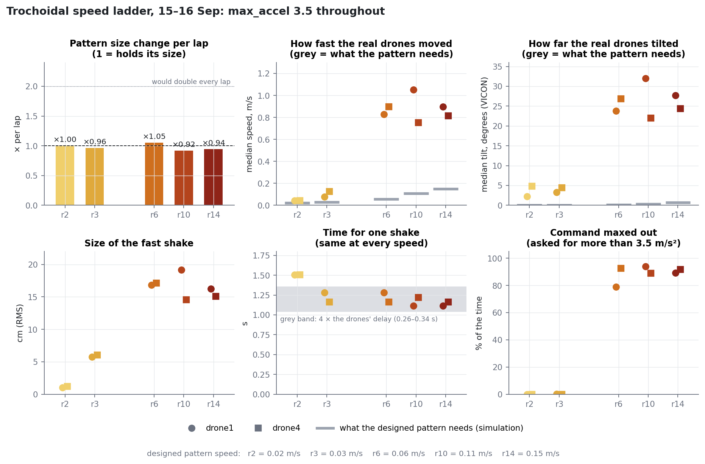
Wobble, tilt and clipping across the ladderOne row per rung, filled markers are the real drones. The step between β=3 and β=6 is where the command starts saturating and the wobble jumps by an order of magnitude.
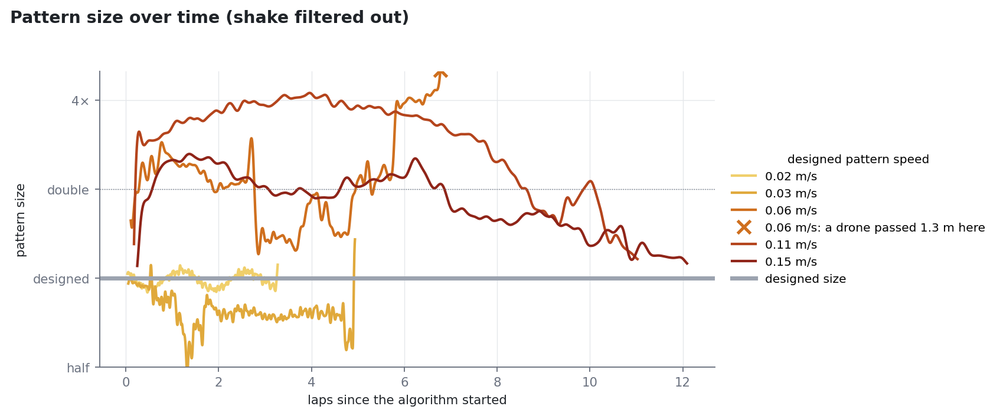
Pattern size per lap, against the designThe trochoid should hold its size. Above the threshold it does not, and the deviation is not a slow drift but a per-lap scaling.
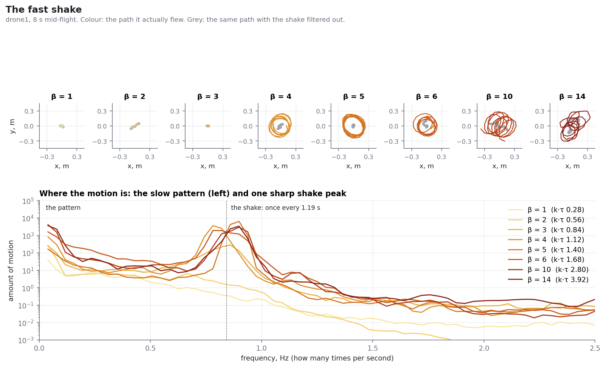
The wobble on its ownPosition band-passed to 0.6–1.5 Hz, so the designed pattern is removed and only the ripple is left. Loops, not noise.
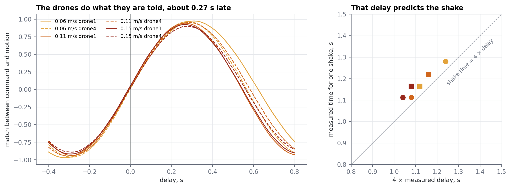
Loop delay, and the 4τ testCross-correlation of the command against the acceleration achieved. The peak is τ; the measured ripple period sits on the period = 4τ line.
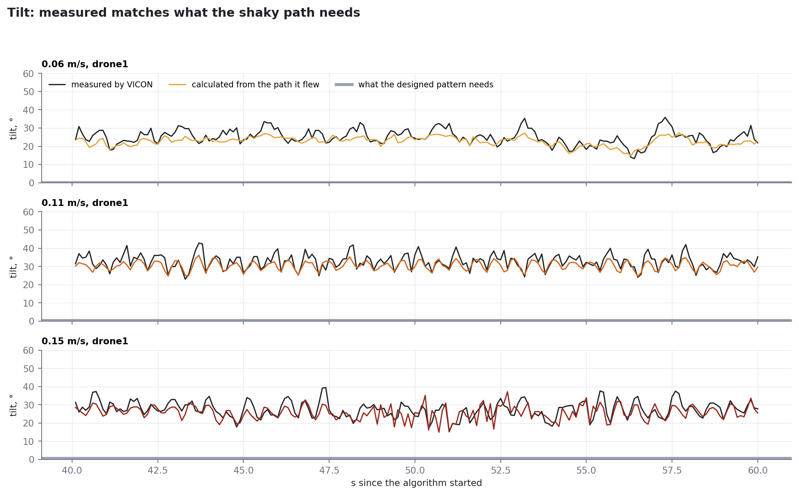
Bank angle demanded vs measuredTilt inferred from the path matches what VICON saw to 1–2°, which is what makes tilt usable as a proxy on older logs.
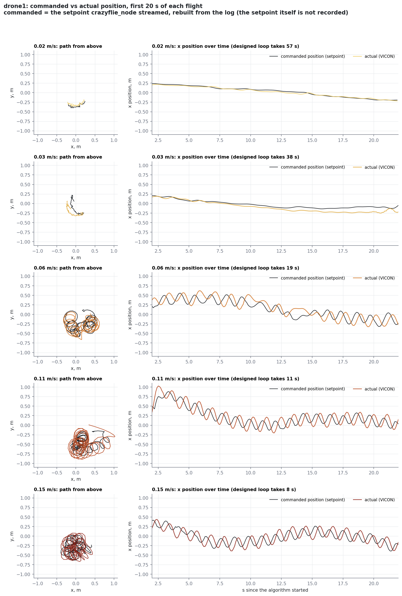
Commanded setpoint vs where the drone wasThe drone tracks its setpoint closely and late. The setpoint itself is what loops — worth being precise about, because it is not tracking error.
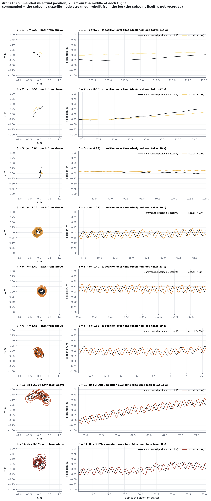
The same, mid-flightA middle slice, away from the start transient and the landing.
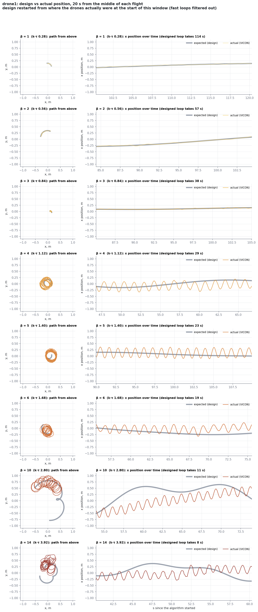
The same, mid-flightMiddle window, same reference.
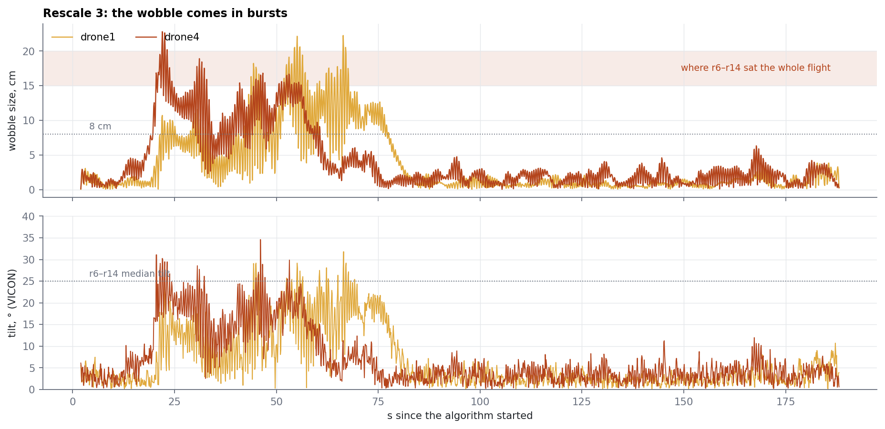
β=3: the wobble comes in burstsBelow the threshold the ringing decays, but it is re-excited — bursts that are not simultaneous across drones.
Coverage
Three speeds of the same coverage law chasing a moving hotspot. Coverage was the quiet algorithm, so this asks what it takes to make it ring.
rung
k
k·τ
τ measured
wobble, real
wobble, sim'd
period
clipped
vs sim
c1
1.20
0.34
0.35 s
0.5 cm
0.0 cm
1.60 s
0%
-3%
c2
2.40
0.67
0.27 s
1.9 cm
0.1 cm
1.28 s
0%
-2%
c3
3.60
1.01
0.25 s
23.3 cm
3.0 cm
1.16 s
79%
+15%
Supporting figures (5)
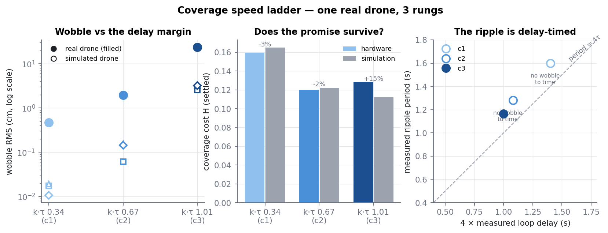
Wobble, the promised property, and the 4τ testLeft: ripple per drone against the designed k·τ, filled = real. Middle: the property the theorem promises, hardware against the same config in simulation. Right: measured ripple period against 4 × the measured delay.
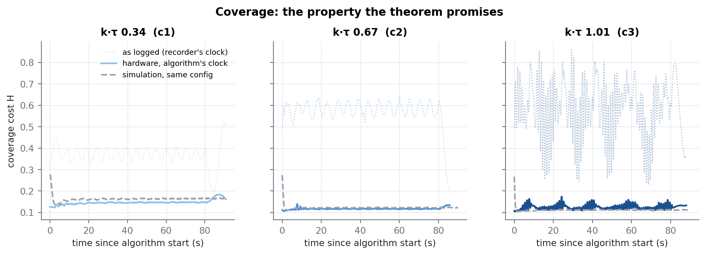
The promised property over timeOne panel per rung, hardware against simulation of that same file. A gap here is gap B — the physical layer — because simulation has already absorbed every modelling choice.
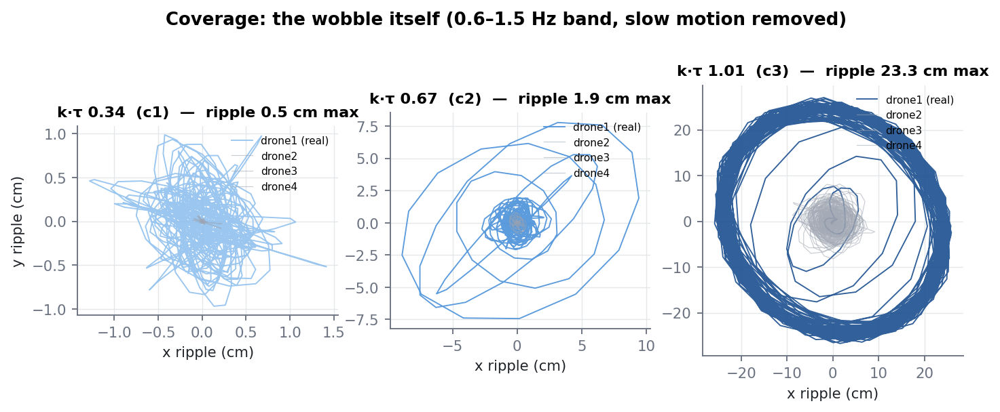
The wobble itselfPosition band-passed to 0.6–1.5 Hz. Closed loops mean a sustained oscillation; a scribble means noise.
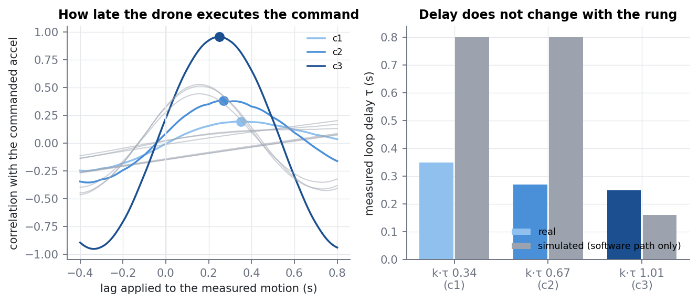
Loop delay per rungLeft: the correlation curves, peak = τ. Right: real drones against the simulated ones, which share the software path but have no radio, motors or tilt — the difference is the physical half of the delay.
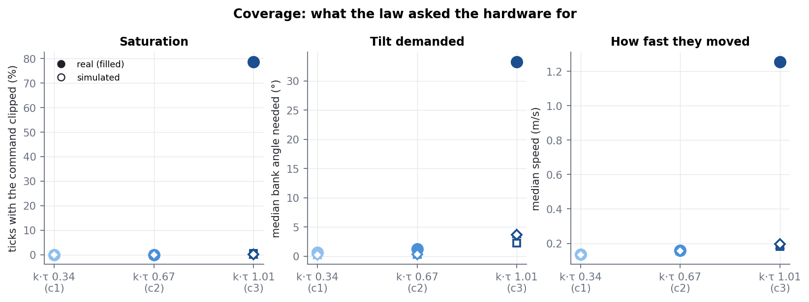
What the law asked the hardware forSaturation, bank angle and speed per rung. Clipping is the thing that turns a growing oscillation into a fixed-size one.
Flocking
The same flock, rescaled in time so k·τ drops from 1.3 to 0.4 without changing the lattice or the path.
rung
k
k·τ
τ measured
wobble, real
wobble, sim'd
period
clipped
vs sim
s3
1.61
0.45
0.34 s
0.5 cm
0.0 cm
1.42 s
0%
-0%
s2
2.28
0.64
0.33 s
0.8 cm
0.1 cm
1.22 s
0%
-1%
s1
4.72
1.32
0.31 s
2.9 cm
0.9 cm
1.16 s
83%
+41%
Supporting figures (5)
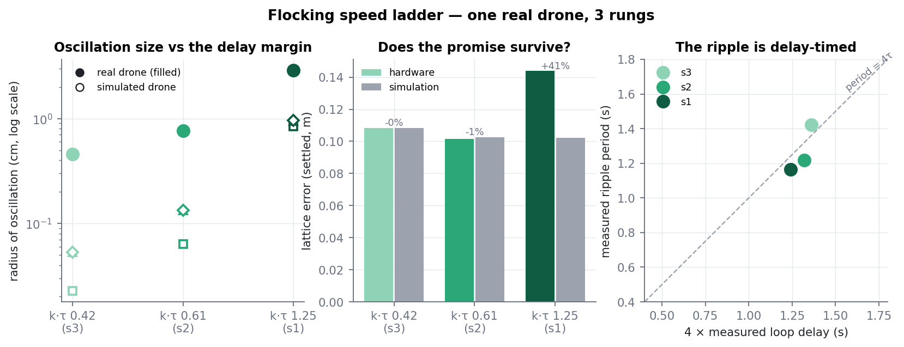
Wobble, the promised property, and the 4τ testLeft: ripple per drone against the designed k·τ, filled = real. Middle: the property the theorem promises, hardware against the same config in simulation. Right: measured ripple period against 4 × the measured delay.
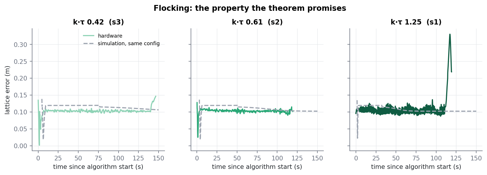
The promised property over timeOne panel per rung, hardware against simulation of that same file. A gap here is gap B — the physical layer — because simulation has already absorbed every modelling choice.
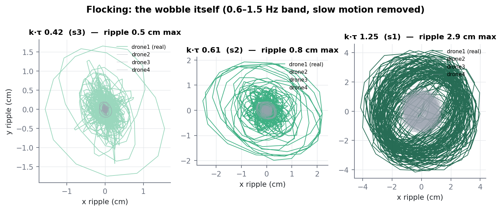
The wobble itselfPosition band-passed to 0.6–1.5 Hz. Closed loops mean a sustained oscillation; a scribble means noise.
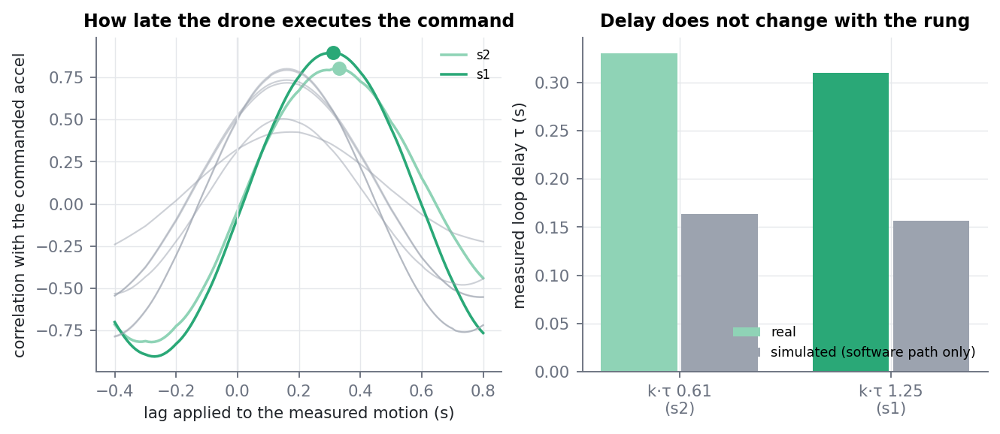
Loop delay per rungLeft: the correlation curves, peak = τ. Right: real drones against the simulated ones, which share the software path but have no radio, motors or tilt — the difference is the physical half of the delay.
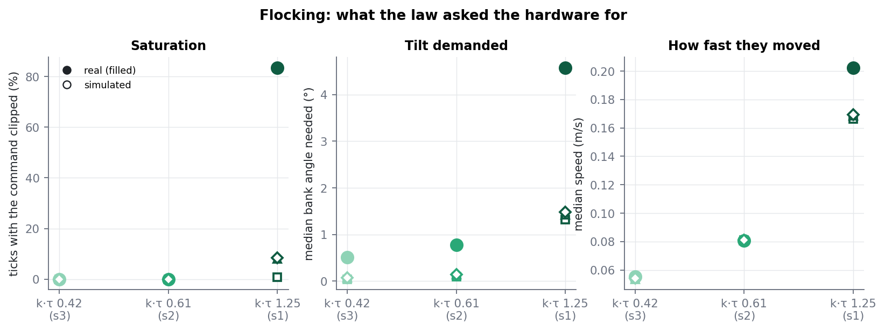
What the law asked the hardware forSaturation, bank angle and speed per rung. Clipping is the thing that turns a growing oscillation into a fixed-size one.
Kuramoto
Four oscillators holding a 0.65 m ring, flown 6 Oct. Unlike coverage and flocking this is NOT a time rescale — only the own-velocity gain moves, 1.4 → 2.9 → 4.3, so the ring the law asks for is identical on all three rungs and k·τ is the one thing that changes.
rung
k
k·τ
τ measured
wobble, real
wobble, sim'd
period
clipped
vs sim
q04
1.40
0.39
0.25 s
0.8 cm
0.1 cm
1.35 s
0%
-0%
q08
2.90
0.81
0.27 s
17.9 cm
0.6 cm
1.22 s
4%
-1%
q12
4.30
1.20
0.28 s
21.1 cm
0.7 cm
1.16 s
80%
-0%
Supporting figures (4)
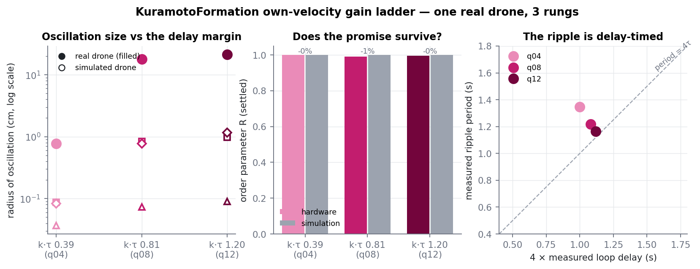
Wobble, the promised property, and the 4τ testLeft: ripple per drone against the designed k·τ, filled = real. Middle: the property the theorem promises, hardware against the same config in simulation. Right: measured ripple period against 4 × the measured delay.
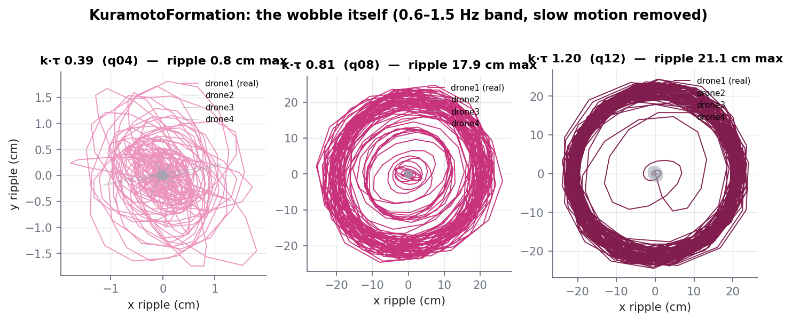
The wobble itselfPosition band-passed to 0.6–1.5 Hz. Closed loops mean a sustained oscillation; a scribble means noise.
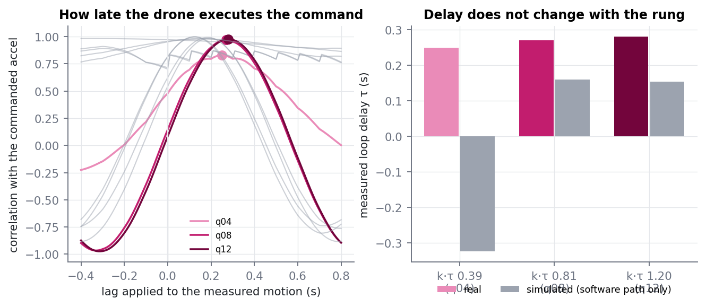
Loop delay per rungLeft: the correlation curves, peak = τ. Right: real drones against the simulated ones, which share the software path but have no radio, motors or tilt — the difference is the physical half of the delay.
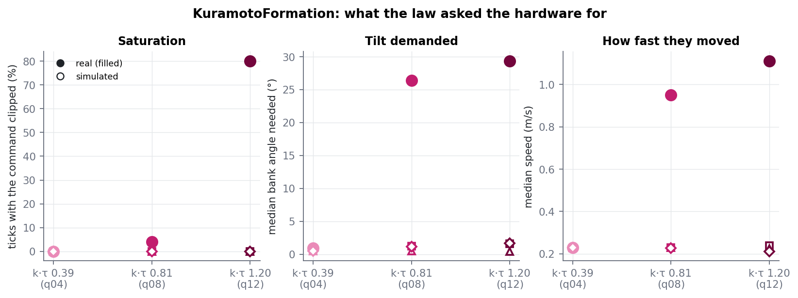
What the law asked the hardware forSaturation, bank angle and speed per rung. Clipping is the thing that turns a growing oscillation into a fixed-size one.
Distance formation
A six-agent octahedron held by distances alone, flown 6 Oct. Same gain ladder as Kuramoto (gain_kv 1.4 → 2.9 → 4.3). The breathing these configs ask for never ran — see figure 7 — so all three rungs held the static shape, which is what they are scored against.
rung
k
k·τ
τ measured
wobble, real
wobble, sim'd
period
clipped
vs sim
h04
1.40
0.39
0.26 s
0.9 cm
0.1 cm
1.60 s
0%
+404%
h08
2.90
0.81
0.28 s
22.8 cm
0.7 cm
1.28 s
10%
+2668%
h12
4.30
1.20
0.26 s
22.7 cm
0.6 cm
1.11 s
90%
+1637%
Supporting figures (7)
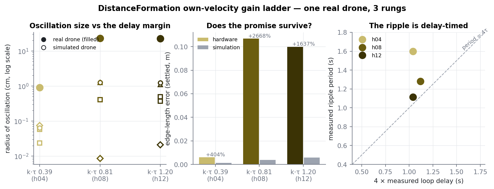
Wobble, the promised property, and the 4τ testLeft: ripple per drone against the designed k·τ, filled = real. Middle: the property the theorem promises, hardware against the same config in simulation. Right: measured ripple period against 4 × the measured delay.
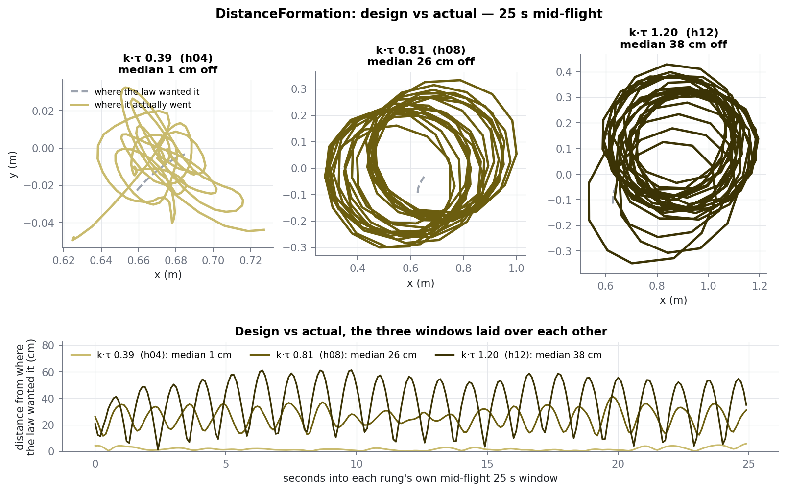
Design vs actualTop: where the law wanted the real drone (its own config in simulation) against where it went, over 25 s mid-flight. Bottom: the distance between them.The promised property over timeOne panel per rung, hardware against simulation of that same file. A gap here is gap B — the physical layer — because simulation has already absorbed every modelling choice.The wobble itselfPosition band-passed to 0.6–1.5 Hz. Closed loops mean a sustained oscillation; a scribble means noise.Loop delay per rungLeft: the correlation curves, peak = τ. Right: real drones against the simulated ones, which share the software path but have no radio, motors or tilt — the difference is the physical half of the delay.What the law asked the hardware forSaturation, bank angle and speed per rung. Clipping is the thing that turns a growing oscillation into a fixed-size one.The breathing these three flights were supposed to do, and did notThe configs ask for a 20 s, ±21.4% size cycle: the octahedron's mean pair distance should swing about 22 cm once every 20 s. Measured, it swings 0.01, 0.51 and 0.82 cm — 50 to 2000 times short. This is not a tracking failure. The recorder caught it independently: reference_valid is 0 on every row of all three records, so /distance_formation/reference never arrived and every native metric in those files is NaN (edge error here is recomputed from the logged positions). One cause fits both symptoms — the node that flew was the INSTALLED copy, and the install space predates commit bf915de (22 Sep), which added breathing and the reference topic together. Rebuild the workspace before reflying these.